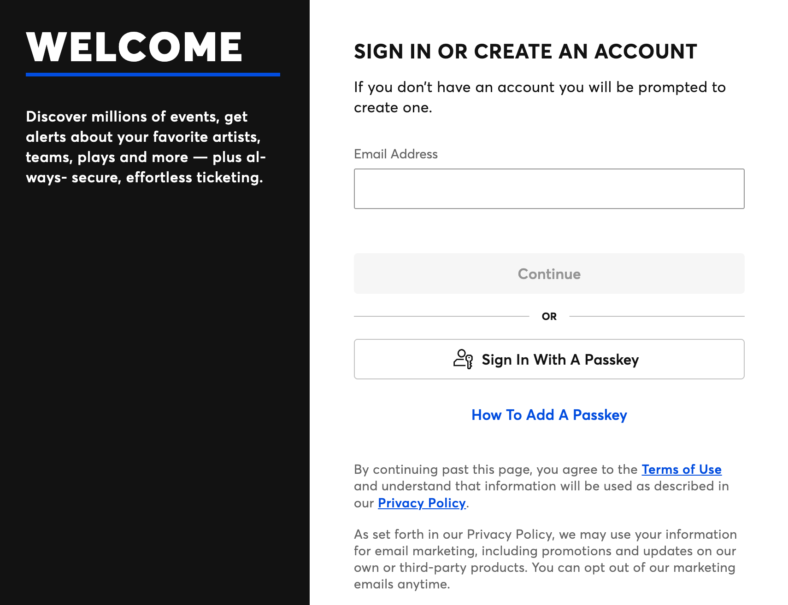

Module 8: Data Collection Audit
This page documents a real-world account sign-in / registration interface and analyzes what data is collected, how it may be used, and the ethical risks involved.
Direct URL to the sign-up / data-collection interface
Screenshot of the data-collection page

System description
Ticketmaster is a digital ticketing platform that lets users browse events and purchase tickets online. Users enter data when they sign in or begin account creation, which typically starts with an email address and may include phone verification in some flows. The purpose of the sign-in/account step is to identify the user and connect purchases, ticket delivery, and order history to a single profile. It also supports security features such as fraud prevention and account recovery.
Data collected
- Visible form fields :
- Email address
- In some flows: phone number and/or one-time verification code
- Inferred data:
- IP address and approximate location
- Device/browser details (e.g., OS, browser type)
- Timestamps (account creation/sign-in time)
- Security signals (e.g., failed attempts, session identifiers)
- Behavioural data after sign-in:
- Event searches, page views, and clicks
- Time on page and session duration
- Cart activity and purchase history
Conceptual relational database sketch

Relationship note: The users table is the primary table.
Related tables such as orders and sessions store many records per user and connect back to
users via user_id (foreign key).
Ethical analysis
One ethical concern is privacy and data minimization: collecting phone numbers, device details, and extensive activity logs may exceed what is necessary for basic ticket purchases. A second concern is informed consent: users may not clearly understand what behavioural tracking occurs after sign-in or how long the data is retained. If this information were mishandled or breached, attackers could use exposed emails/phone numbers and activity patterns for phishing, scams, or account takeover attempts. The overall risk increases if sensitive activity data is retained too long or shared with third parties without clear user control.
Recommendations
- Collect only essential fields during sign-up and clearly mark optional fields (like phone number) unless strictly required for security.
- Shorten retention periods for detailed behavioural logs and provide clearer user controls for viewing/deleting stored data where feasible.
- Improve transparency and security by using clearer consent language, limiting third-party trackers, and offering strong account protection such as two-factor authentication (2FA).